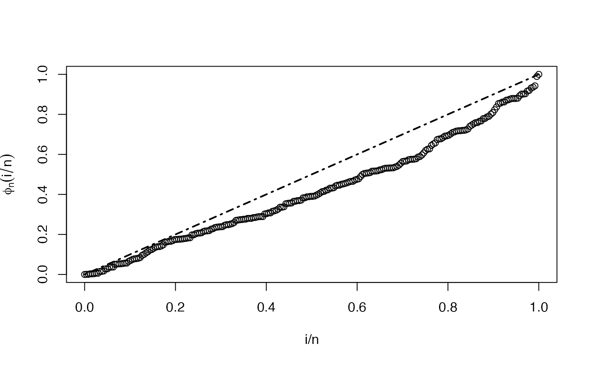
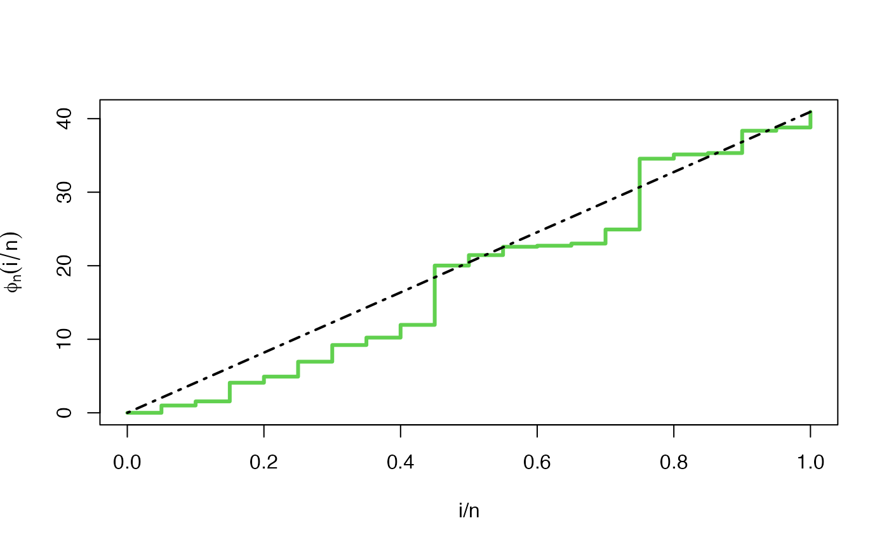
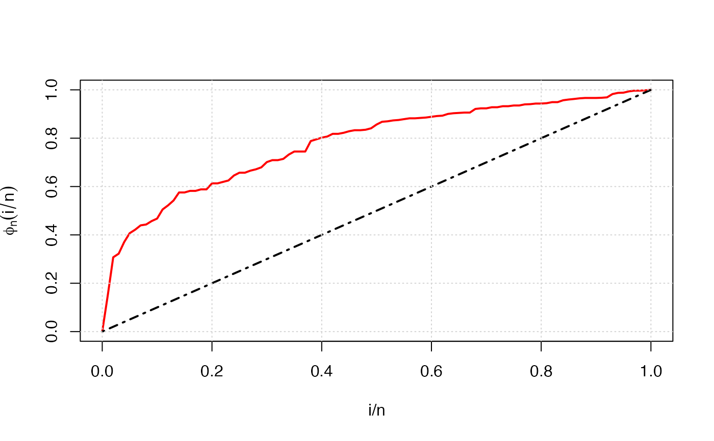

Draws a TTT plot of an EmpiricalTTT object, one for each strata.
TTT plots are graphed in the same order in which they appear in the list
element strata or in the list element phi_n of
the EmpiricalTTT object.
# S3 method for EmpiricalTTT plot( x, add = FALSE, grid = FALSE, type = "l", pch = 1, xlab = "i/n", ylab = expression(phi[n](i/n)), ... )
| x | an object of class |
|---|---|
| add | logical. If TRUE, |
| grid | logical. If |
| type | character string (length 1 vector) or vector of 1-character strings
indicating the type of plot for each TTT graph. See |
| pch | numeric (integer). A vector of plotting characters or symbols when
|
| xlab, ylab | titles for x and y axes, as in |
| ... | further arguments passed to |
This method is based on matplot. Our function
sets some default values for graphic parameters: type = "l", pch = 1,
xlab = "i/n" and ylab = expression(phi[n](i/n)). This arguments
can be modified by the user.
Jaime Mosquera Gutiérrez, jmosquerag@unal.edu.co
library(EstimationTools) #-------------------------------------------------------------------------------- # First example: Scaled empirical TTT from 'mgus1' data from 'survival' package. TTT_1 <- TTTE_Analytical(Surv(stop, event == 'pcm') ~1, method = 'cens', data = mgus1, subset=(start == 0)) plot(TTT_1, type = "p")#-------------------------------------------------------------------------------- # Second example: Scaled empirical TTT using a factor variable with 'aml' data # from 'survival' package. TTT_2 <- TTTE_Analytical(Surv(time, status) ~ x, method = "cens", data = aml) plot(TTT_2, type = "l", lty = c(1,1), col = c(2,4))#-------------------------------------------------------------------------------- # Third example: Non-scaled empirical TTT without a factor (arbitrarily simulated # data). y <- rweibull(n=20, shape=1, scale=pi) TTT_3 <- TTTE_Analytical(y ~ 1, scaled = FALSE) plot(TTT_3, type = "s", col = 3, lwd = 3)#-------------------------------------------------------------------------------- # Fourth example: TTT plot for 'carbone' data from 'AdequacyModel' package if (!require('AdequacyModel')) install.packages('AdequacyModel')#>library(AdequacyModel) data(carbone) TTT_4 <- TTTE_Analytical(response = carbone, scaled = TRUE) plot(TTT_4, type = "l", col = "red", lwd = 2, grid = TRUE)#--------------------------------------------------------------------------------